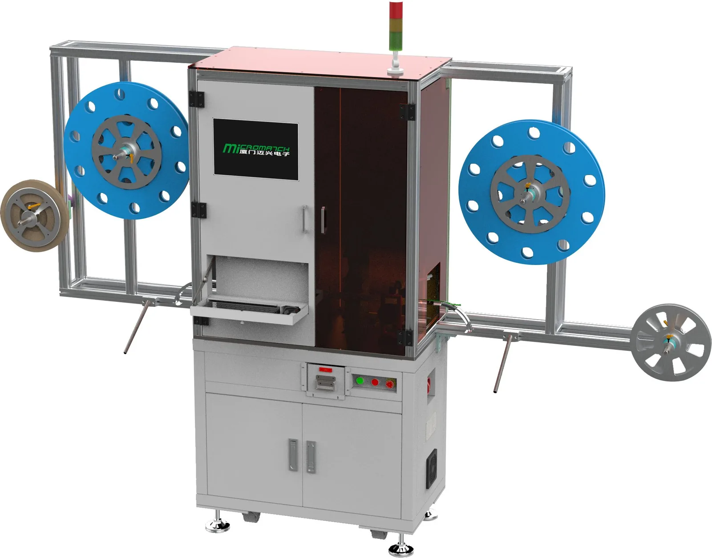

High-precision inspection
Length, position, bore and concentricity judged against one standard.


Overseas buyers can chat directly with our sales and technical team on WhatsApp for product selection, quotations and technical documents.
Please do not send passwords or banking details over WhatsApp. We use the conversation only to answer your enquiry; see our Privacy Policy for details.
STRIP-FEED INSPECTION
Inspect between the stamping and molding cycle so dimensional, missing-material and appearance errors are caught without leaving the line.

Length, position, bore and concentricity judged against one standard.
Inspection speed can follow the stamping press without adding cycle time.
Standardised workflows shorten changeover and commissioning.
PRODUCT DETAILS
The equipment inspects the strip directly after stamping without adding another production cycle.

ENGINEERING FILE
The complete engineering record remains available below for evaluation and selection.

High-Precision Full Inspection:
Automatically measures key dimensions such as length, height, position, diameter, inner diameter, and concentricity,
Precisely identifies deformation, short shots, burrs, and cosmetic defects to support full in-line inspection; actual detection performance is subject to the agreed technical specification and acceptance criteria.
What You See Is What You Get:
Results are displayed in real time, with images showing inspection changes dynamically for more intuitive decisions.
No Learning Curve:
Standardized workflows and a guided interface allow task setup and deployment without specialized training.
| Item | Four-Strip Inspection Equipment | Double-Strip Inspection Equipment | Single-Strip Inspection Equipment |
|---|---|---|---|
| Product Inspection Range | Four-Strip Stamped Parts | Double-Strip Stamped Parts | Single-Strip Stamped Parts |
| Product Areas Inspected | Front, Back, and Side Faces | Front, Back, and Side Faces | Front, Back, and Side Faces |
| Inspection Items | Short shots, dimensional defects, etc. | Short shots, dimensional defects, etc. | Short shots, dimensional defects, etc. |
| Part Feeding Method | After stamping, a motor advances the strip for part-by-part inspection | After stamping, a motor advances the strip for part-by-part inspection | After stamping, a motor advances the strip for part-by-part inspection |
| Inspection Speed | CCD inspection speed up to 10 parts/s; strip inspection speed can be synchronized with the stamping press | ||
| Inspection Accuracy | Within ±0.02 mm | Within ±0.02 mm | Within ±0.02 mm |
| Nonconforming Part Detected | Alarm triggered after several consecutive nonconforming parts | Alarm triggered after several consecutive nonconforming parts | Alarm triggered after several consecutive nonconforming parts |
| Number of CCD Cameras | 8 sets, or 4 sets | 4 sets, or 2 sets | 2 sets, or 1 set |
| Equipment Footprint | L × W × H: 700 mm×450 mm×1900 mm | L × W × H: 700 mm×450 mm×1900 mm | L × W × H: 700 mm×450 mm×1900 mm |
| Simple Operation | One-Button Start and Stop | One-Button Start and Stop | One-Button Start and Stop |
Technical notice: the values above are typical reference figures under defined conditions, for selection guidance only, and do not constitute a performance guarantee. Actual detection rate, accuracy and cycle time depend on the workpiece, lighting, fixture and parameter settings and are governed by the signed technical agreement and acceptance criteria. Specifications may change without notice. See Terms of Sale & Technical Disclaimer. Technical Disclaimer
CHOOSE WITH EVIDENCE
Share the material, target defect, tolerance and cycle speed. MAIBIDA will recommend the platform and integration path.
Talk to an engineer
MAIBIDA · Intelligent Manufacturing for the Future
Kunshan Maibida Intelligent Equipment Co., Ltd. specializes in machine vision light sources and industrial inline inspection equipment, integrating R&D, manufacturing, and sales to provide manufacturers with integrated solutions for vision inspection, mold monitoring, intelligent sorting, and automated feeding.
Customer Service Hotline:15995675085
Official Email:mai_bida@163.com
Address: Room 213, 2/F, Yuda Science and Technology Park, No. 6 Leshan Road, Yushan Town, Kunshan, Suzhou, Jiangsu, China
WhatsApp: +86 159 9567 5085
© 2020–2026 Kunshan Maibida Intelligent Equipment Co., Ltd. All Rights Reserved.
 China
China